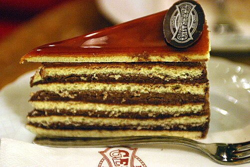
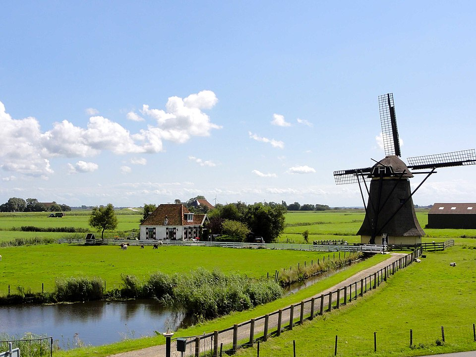

Free On-Device Text Extraction Service
🤍 NEW FREE SERVICE
EN: Free text extraction from your images
CS/SK: Bezplatná extrakce textu z vašich obrázků
NL: Gratis tekstextractie uit uw afbeeldingen
CS/SK: Bezplatná extrakce textu z vašich obrázků
NL: Gratis tekstextractie uit uw afbeeldingen
🎀 100% On-Device |
🍷 No Tracking |
🍃 Instant
Your images stay on your device. No cloud. I built this with respect for your privacy.


Chapter I: Roots & Memory
Exploring the quiet landscapes and enduring traditions that shape our shared northern and eastern heritage.
Chapter II: Winds & Waters
Stories carried by the Baltic breeze and the quiet rivers that have witnessed centuries of change.
Chapter III: Craft & Continuity
The hands that build, weave, and preserve. A tribute to artisans across generations.
DE (Coming)FR (Coming)NL (Coming)FO (Coming)IS (Coming)NO (Coming)
Archive







🤍 Cultural Gateways
Loading cultural gateways...